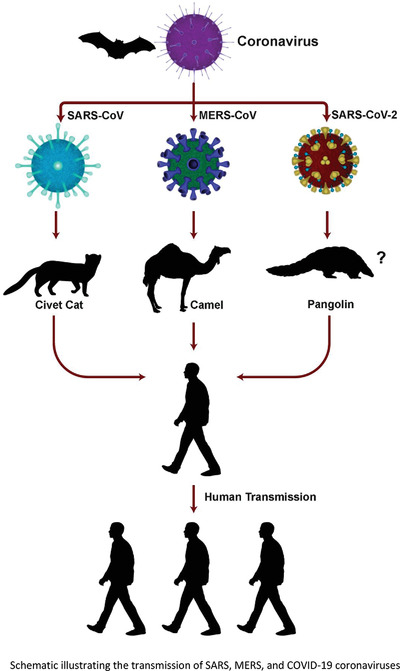
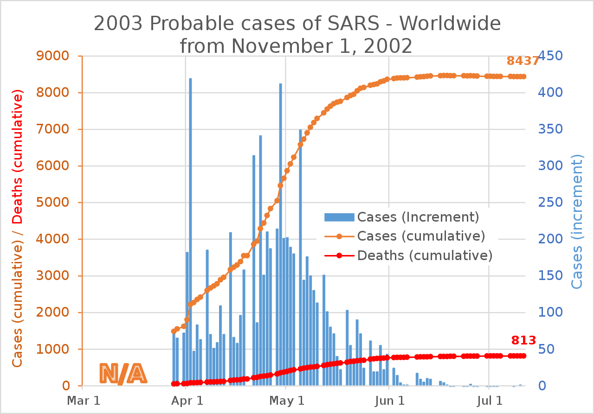

SARS-CoV-1 (Severe Acute Respiratory Syndrome)
Severe acute respiratory syndrome (SARS) is a viral respiratory illness caused by a coronavirus, called SARS-associated coronavirus (SARS-CoV). SARS was first reported in Asia in February 2003. The illness spread to more than two dozen countries in North America, South America, Europe, and Asia before the SARS global outbreak of 2003 was contained.
In the 2003 global disease outbreak, what became known as SARS-CoV started as a mystery illness—without name, origin, or cure. Public health scientists across the globe scrambled to understand and contain this health threat.CDC began working with the World Health Organization (WHO) in late February to investigate and confirm outbreaks of an unusual pneumonia in Southeast Asia. As WHO led a global effort to understand the illness and how to prevent its spread, questions outnumbered answers. At the time, all that was known about the new disease was that people quickly become severely ill and that it could be fatal.
Origin of SARS-CoV-1
Severe acute respiratory syndrome (SARS) is a viral respiratory disease of zoonotic origin caused by severe acute respiratory syndrome coronavirus (SARS-CoV or SARS-CoV-1), the first identified strain of the SARS coronavirus species severe acute respiratory syndrome–related coronavirus (SARSr-CoV). The first known cases occurred in November 2002, and the syndrome caused the 2002–2004 SARS outbreak. Around late 2017, Chinese scientists traced the virus through the intermediary of Asian palm civets to cave-dwelling horseshoe bats in Xiyang Yi Ethnic Township, Yunnan.
Signs and symptoms
SARS usually begins with flu-like signs and symptoms — fever, chills, muscle aches, headache and occasionally diarrhea. After about a week, signs and symptoms include:
- Fever of 100.5 F (38 C) or higher
- Dry cough
- Shortness of breath
SARS is a serious illness that can lead to death. If you have signs or symptoms of a respiratory infection, or if you have flu-like signs and symptoms with fever after traveling abroad, see your doctor right away.
Transmission
Most respiratory illnesses, including SARS, spread through droplets that enter the air when someone with the disease coughs, sneezes or talks. Most experts think SARS spreads mainly through close personal contact, such as caring for someone with SARS. The virus may also be spread on contaminated objects — such as doorknobs, telephones and elevator buttons.
The primary route of transmission for SARS-CoV is contact of the mucous membranes with respiratory droplets or fomites. While diarrhea is common in people with SARS, the fecal–oral route does not appear to be a common mode of transmission. The basic reproduction number of SARS-CoV, R0, ranges from 2 to 4 depending on different analyses. Control measures introduced in April 2003 reduced the R to 0.4
In general, people at greatest risk of SARS are those who have had direct, close contact with someone who's infected, such as family members and health care workers.
Diagnosis
SARS-CoV may be suspected in a patient who has:
- Any of the symptoms, including a fever of 38 °C (100 °F) or higher, and
- Either a history of:
- Contact (sexual or casual) with someone with a diagnosis of SARS within the last 10 days or
- Travel to any of the regions identified by the World Health Organization (WHO) as areas with recent local transmission of SARS.
- Clinical criteria of Sars-CoV diagnosis:
- Early illness: equal to or more than 2 of the following: chills, rigors, myalgia, diarrhea, sore throat (self-reported or observed)
- Mild-to-moderate illness: temperature of >38 °C (100 °F) plus indications of lower respiratory tract infection (cough, dyspnea)
- Severe illness: ≥1 of radiographic evidence, presence of ARDS, autopsy findings in late patients.
For a case to be considered probable, a chest X-ray must be indicative for atypical pneumonia or acute respiratory distress syndrome.
The WHO has added the category of "laboratory confirmed SARS" which means patients who would otherwise be considered "probable" and have tested positive for SARS based on one of the approved tests (ELISA, immunofluorescence or PCR) but whose chest X-ray findings do not show SARS-CoV infection (e.g. ground glass opacities, patchy consolidations unilateral).
The appearance of SARS-CoV in chest X-rays is not always uniform but generally appears as an abnormality with patchy infiltrates.
Prevention
Researchers are working on several types of vaccines for SARS, but none has been tested in humans. If SARS infections reappear, follow these safety guidelines if you're caring for someone who may have a SARS infection:
- Wash your hands. Clean your hands frequently with soap and hot water or use an alcohol-based hand rub containing at least 60% alcohol.
- Wear disposable gloves. If you have contact with the person's body fluids or feces, wear disposable gloves. Throw the gloves away immediately after use and wash your hands thoroughly.
- Wear a surgical mask. When you're in the same room as a person with SARS, cover your mouth and nose with a surgical mask. Wearing eyeglasses also may offer some protection.
- Wash personal items. Use soap and hot water to wash the utensils, towels, bedding and clothing of someone with SARS.
- Disinfect surfaces. Use a household disinfectant to clean any surfaces that may have been contaminated with sweat, saliva, mucus, vomit, stool or urine. Wear disposable gloves while you clean and throw the gloves away when you're done.
Follow all precautions for at least 10 days after the person's signs and symptoms have disappeared. Keep children home from school if they develop a fever or respiratory symptoms within 10 days of being exposed to someone with SARS.
Treatment
As SARS is a viral disease, antibiotics do not have direct effect but may be used against bacterial secondary infection. Treatment of SARS is mainly supportive with antipyretics, supplemental oxygen and mechanical ventilation as needed. While ribavirin is commonly used to treat SARS, there seems to have little to no effect on SARS-CoV, and no impact on patient's outcomes. There is currently no proven antiviral therapy. Tested substances, include ribavirin, lopinavir, ritonavir, type I interferon, that have thus far shown no conclusive contribution to the disease's course. Administration of corticosteroids, is recommended by the British Thoracic Society/British Infection Society/Health Protection Agency in patients with severe disease and O2 saturation of <90%
People with SARS-CoV must be isolated, preferably in negative-pressure rooms, with complete barrier nursing precautions taken for any necessary contact with these patients, to limit the chances of medical personnel becoming infected. In certain cases, natural ventilation by opening doors and windows is documented to help decreasing indoor concentration of virus particles.
Some of the more serious damage caused by SARS may be due to the body's own immune system reacting in what is known as cytokine storm.
Global Statistics
GLOBAL EBOLA STATISTICS
The 2002–2004 outbreak of SARS, caused by severe acute respiratory syndrome coronavirus (SARS-CoV or SARS-CoV-1), infected over 8,000 people from 29 different countries and territories, and resulted in at least 774 deaths worldwide.
The outbreak was first identified in Foshan, Guangdong, China, in November 2002. The World Health Organization (WHO) was notified of the outbreak in February 2003, and issued a global alert in March 2003. Initially, the cause of the outbreak was unknown, and some media outlets reported that an influenza virus was a potential culprit. The major part of the outbreak lasted about 8 months, and the World Health Organization declared SARS contained on 5 July 2003. However, several SARS cases were reported until May 2004.
In late December 2019, SARS-CoV-2, a new strain of coronavirus closely related to the one that caused SARS, was discovered in Wuhan, Hubei, China. The new strain causes COVID-19, a disease which has since spread worldwide, leading to an ongoing pandemic that has killed millions.